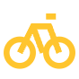
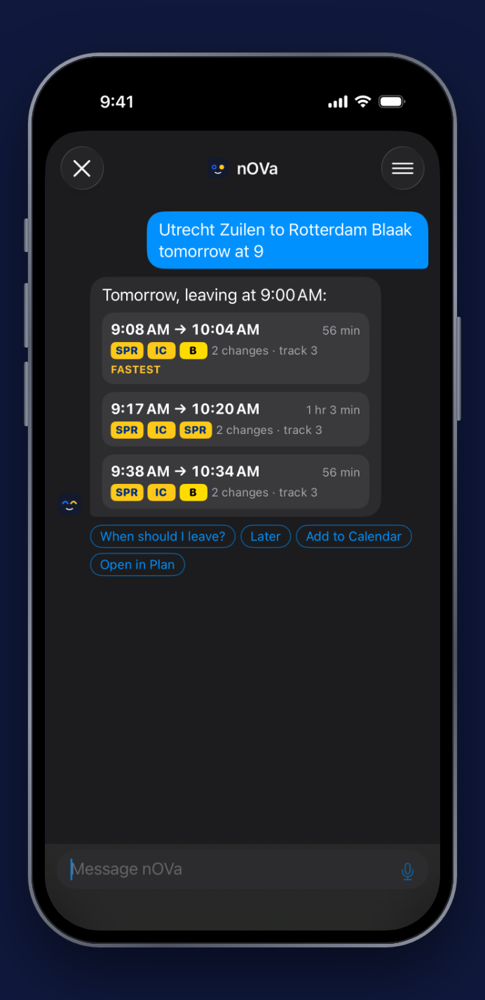

Five ways to add both features to ovnow.app. Each sits between real neighbouring sections. English copy, Dutch in grey below each headline. Recommended: C.
One section per feature in the existing split style ("Where is it?", "How long?"). Fits the page rhythm best, but makes the page longer.
OV-fiets now shows how many OV-fiets are free at the station. Live, with the opening hours.
On station boards, the map, your favorites, your route and a widget.


nOVa is an assistant inside OVnow. Type a trip in plain words and she plans it. She counts down to your departure and checks reported problems.
She is off until you turn her on.
Both features in one compact band of two tiles. Short and scannable; less room for the visuals.
On boards, the map, favorites, routes and a widget.
Plans trips from plain words. Off until you turn her on.
OV-fiets now as a live-looking card in the site's own board style, then nOVa with her face and a small static chat. Shows the feature rather than tells it, and keeps nOVa calm.
OV-fiets now shows how many OV-fiets are free, live. Check before you leave.
On station boards, the map, favorites, routes and a widget.
An assistant inside OVnow. Tell her a trip in plain words. She plans it, counts down to departure and checks reported problems.
She also does small talk and fun facts. She never pops up by herself. Use her when you want, or switch her off in Settings.
A thin strip above the hero that links to a short section. Lowest effort and visible at once; easy to overlook.
Hero as today: lede, beta button, phone video.
Tap a suggestion and nOVa answers, with OV-fiets now inside one reply. Playful and shows both at once; needs a bit of JS and the answers must stay true.
Try a question. This is a demo with example answers.
nOVa is opt-in. She stays quiet until you turn her on.
Card stacks under the text; nOVa phone comes before her text so the face leads.
OV-fiets now shows how many OV-fiets are free, live. Check before you leave.
An assistant inside OVnow. Tell her a trip in plain words. She plans it and counts down to departure.
Only there when you ask. One switch in Settings turns her off.